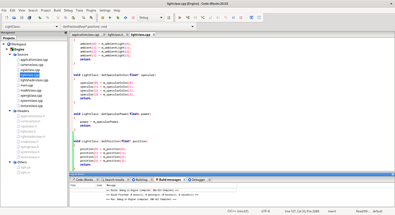

Why OpenGL?
OpenGL is the leading cross platform graphics API that utilizes hardware acceleration on modern video cards.
OpenGL 4.0 is the equivalent API to DirectX 11 in terms of features and modern hardware utilization; however, its main advantage is being cross platform.
Also, OpenGL is an easier language to start learning graphics development with, especially on Linux.
What about Vulkan?
Vulkan is an expert's API. It is written solely for developers who have already mastered OpenGL 4 but still require even more low-level control over the rendering pipeline due to increased performance requirements.
The person learning Vulkan should generally already have written a very complex OpenGL 4 engine and have thorough knowledge of all of its aspects.
If this doesn't describe your situation then you are better suited to learn OpenGL 4.
The focus of Vulkan is really around being able to parallelize your graphics workflow to take efficient control of all the GPUs at your disposal.
But to do so means writing large chunks of code to do even simple things that you could write with a single line in OpenGL 4.
Also, an inexperienced usage of Vulkan can actually perform worse than using OpenGL 4.
Why OpenGL 4.0?
OpenGL 4.0 if the base version of OpenGL 4.
It is a feature complete API that provides all the graphics functionality that most applications will ever need.
The later versions (4.1, 4.2, etc.) just add additional functions and small features that won't be needed for this tutorial series.
Linux Operating System
Linux based operating systems are currently the most resource efficient, secure, and high-performance operating systems available.
This lends itself well to writing 3D graphics applications that are already demanding on the operating system in terms of resources.
As well most Linux distributions are completely free.
And if you are already familiar with Windows and unfamiliar with Linux, then you will find using current versions of Linux very similar to using Windows.
First Steps
First thing to do is choose a distribution of Linux that you like.
For these tutorials I will be using Ubuntu 24 (Desktop Edition).
You can choose anything you prefer, but some of the setup steps might have slightly different syntax.
Before writing any graphics code we'll need to have the tools to do so.
On Linux you can use the g++ compiler for C++ from the command line, and text editors such as emacs or vi.
But to speed things up I would recommend using one of the free IDEs that are available such as Code::Blocks.
I will still provide makefiles for command line if you prefer that way of doing things.
Installing Code::Blocks
First thing you need to do is install the GNU C++ compiler and the make utility.
You can search the application installer in Linux for the software.
Or on Ubuntu you can enter the following from the command line ("Terminal" is the name of the program to start the command line) to download and install the software:
$ sudo apt install g++
$ sudo apt install make
The second step is to install the OpenGL development libraries. Enter the following command to do so on from the command line:
$ sudo apt install libglu1-mesa-dev
The third step is to install the X11 development libraries since we will be using the X11 window system on Linux. Enter the following command from the command line:
$ sudo apt install libx11-dev
The final step is to now install Code::Blocks. Enter the following command from the command line:
$ sudo apt install codeblocks
So now Code::Blocks should be installed and ready for use.
You can find and launch Code::Blocks from the "Show Apps" button.
I recommend to "Add to Favorites" by right clicking on it and selecting that option so that it is easy to find and launch.
Setting up Code::Blocks
First launch Code::Blocks and it should find gcc as the default compiler.
Next select the option on the first screen to "Create a new project".
From the options of projects choose the "Empty project" option.
You will then be asked to name the project and set the location where the files will be placed. Once that is done click on "Next".
On the next page you will be asked about configurations you want. You can leave the configurations default settings for debug and release and just click on "Finish".
From here you can now click on "Project" and "Add files..." to start loading your project with your source files.
Now before compiling you will need to set your linker options to link in OpenGL and X11.
First select "Project" and then "Build Options".
Then make sure to select the overall project in the left bar, not just the debug or release, so that these settings will be applied to both types of builds.
Next click on "Linker Settings".
Click into the "Other linker options" box and put each option on its own line:
-l GL
-l X11
Now both OpenGL and X11 functions will compile in your project.
Important Note: You may need to go into Plugins, Manage Plugins, and then disable the Code completion plugin if you are experiencing crashes in newer versions of Linux.
Summary
Our Linux development environment should now be setup and ready for us to start writing OpenGL 4.0 applications.

To Do Exercises
1. Have a quick review of some of the documentation and code resources available on the opengl.org website.